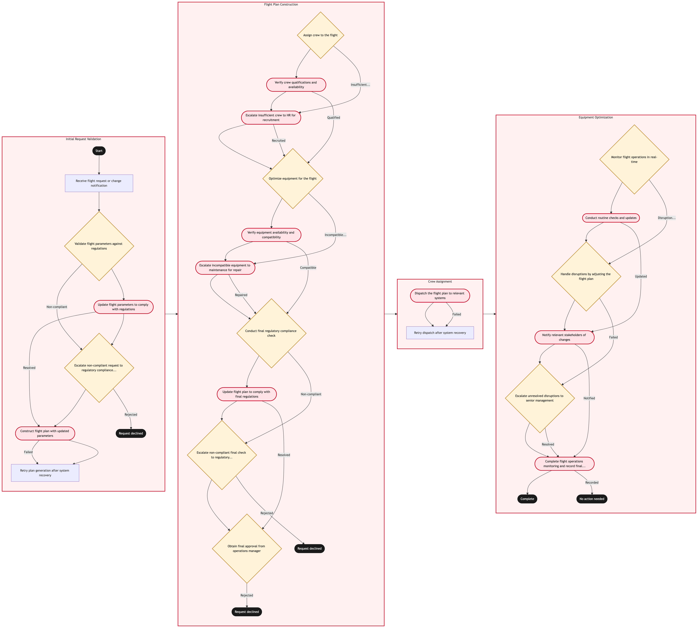

Updated 2026-08-20
Operational Flight Plan Construction
Process flow
Click to zoom

Process steps
▼
Phase 1 — Initial Request Validation
6 steps
| Step | Activity | Role | System | Input | Output | KPI | Dec | Exc | Pain point |
|---|---|---|---|---|---|---|---|---|---|
| 1.1 | Receive flight request or change notification | YYZ Operations Control Duty Manager | NetLine/OpsB | Flight request details from dispatchers | Validated flight request data | Response time within 5 minutes | N | N | Delays in receiving requests can disrupt the schedule. |
| 1.2 | Validate flight parameters against regulations | Flight Planning Officer | Jeppesen OCCB | Validated flight request data | Regulatory compliance report | Validation completion within 30 minutes | Y | N | Inconsistent regulatory updates can cause delays. |
| 1.3 | Update flight parameters to comply with regulations | Flight Planning Officer | Jeppesen OCCB | Regulatory compliance report | Updated flight request data | Compliance update within 20 minutes | N | Y | Manual updates can introduce errors. |
| 1.4 | Escalate non-compliant request to regulatory compliance team | Regulatory Compliance Manager | Jeppesen OCCB | Non-compliant flight request data | Compliance approval or rejection | Escalation resolution within 1 hour | Y | N | Manual review can slow down the process. |
| 1.5 | Construct flight plan with updated parameters | Flight Planner | NetLine/OpsB | Updated flight request data | Draft flight plan | Plan construction within 45 minutes | N | Y | System downtime can affect plan generation. |
| 1.6 | Retry plan generation after system recovery | Flight Planner | NetLine/OpsB | Updated flight request data | Draft flight plan | Plan construction within 45 minutes | N | N | System downtime can affect plan generation. |
▼
Phase 2 — Flight Plan Construction
10 steps
| Step | Activity | Role | System | Input | Output | KPI | Dec | Exc | Pain point |
|---|---|---|---|---|---|---|---|---|---|
| 2.1 | Assign crew to the flight | Crew Scheduler | ACARS DatalinkC | Draft flight plan | Assigned crew list | Crew assignment within 30 minutes | Y | N | Insufficient crew availability can delay flights. |
| 2.2 | Verify crew qualifications and availability | Crew Scheduler | ACARS DatalinkC | Assigned crew list | Verified crew status | Verification completion within 10 minutes | N | Y | Manual verification can introduce errors. |
| 2.3 | Escalate insufficient crew to HR for recruitment | HR Specialist | NetLine/OpsB | Assigned crew list | Recruitment status update | Recruitment response within 2 hours | N | Y | Manual recruitment can slow down the process. |
| 2.4 | Optimize equipment for the flight | Equipment Scheduler | NAV CANADAB | Draft flight plan and crew list | Optimized equipment list | Equipment optimization within 30 minutes | Y | N | Incompatible equipment can delay flights. |
| 2.5 | Verify equipment availability and compatibility | Equipment Scheduler | NAV CANADAB | Optimized equipment list | Verified equipment status | Verification completion within 10 minutes | N | Y | Manual verification can introduce errors. |
| 2.6 | Escalate incompatible equipment to maintenance for repair | Maintenance Manager | NAV CANADAB | Optimized equipment list | Repair status update | Repair response within 4 hours | N | Y | Manual repair can slow down the process. |
| 2.7 | Conduct final regulatory compliance check | Regulatory Compliance Manager | Jeppesen OCCB | Optimized flight plan, crew list, and equipment list | Final compliance report | Compliance check within 30 minutes | Y | N | Inconsistent updates can cause delays. |
| 2.8 | Update flight plan to comply with final regulations | Flight Planner | NetLine/OpsB | Final compliance report | Updated flight plan | Plan update within 20 minutes | N | Y | Manual updates can introduce errors. |
| 2.9 | Escalate non-compliant final check to regulatory compliance team | Regulatory Compliance Manager | Jeppesen OCCB | Final compliance report | Compliance approval or rejection | Escalation resolution within 1 hour | Y | N | Manual review can slow down the process. |
| 2.10 | Obtain final approval from operations manager | Operations Manager | NetLine/OpsB | Updated flight plan, crew list, and equipment list | Approval status | Approval within 30 minutes | Y | N | Manual approvals can introduce delays. |
▼
Phase 3 — Crew Assignment
2 steps
| Step | Activity | Role | System | Input | Output | KPI | Dec | Exc | Pain point |
|---|---|---|---|---|---|---|---|---|---|
| 3.1 | Dispatch the flight plan to relevant systems | Flight Dispatcher | NetLine/OpsB | Approved flight plan, crew list, and equipment list | Dispatched flight data | Dispatch within 5 minutes | N | Y | System downtime can affect dispatch. |
| 3.2 | Retry dispatch after system recovery | Flight Dispatcher | NetLine/OpsB | Approved flight plan, crew list, and equipment list | Dispatched flight data | Dispatch within 5 minutes | N | N | System downtime can affect dispatch. |
▼
Phase 4 — Equipment Optimization
6 steps
| Step | Activity | Role | System | Input | Output | KPI | Dec | Exc | Pain point |
|---|---|---|---|---|---|---|---|---|---|
| 4.1 | Monitor flight operations in real-time | YYZ Operations Control Duty Manager | NetLine/OpsB | Dispatched flight data | Operational status updates | Real-time monitoring within 1 minute | Y | N | Delays in receiving operational data can affect decision-making. |
| 4.2 | Conduct routine checks and updates | Flight Operations Analyst | NetLine/OpsB | Operational status updates | Updated flight plan | Routine checks within 10 minutes | N | Y | Manual checks can introduce errors. |
| 4.3 | Handle disruptions by adjusting the flight plan | Flight Planner | NetLine/OpsB | Disruption details and operational status updates | Adjusted flight plan | Disruption resolution within 15 minutes | Y | N | Complex disruptions can slow down adjustments. |
| 4.4 | Notify relevant stakeholders of changes | Flight Operations Analyst | NetLine/OpsB | Adjusted flight plan | Notification status | Notifications within 5 minutes | N | Y | Manual notifications can introduce delays. |
| 4.5 | Escalate unresolved disruptions to senior management | Senior Operations Manager | NetLine/OpsB | Disruption details and operational status updates | Resolution status update | Escalation resolution within 1 hour | Y | N | Manual escalation can slow down the process. |
| 4.6 | Complete flight operations monitoring and record final status | YYZ Operations Control Duty Manager | NetLine/OpsB | Operational status updates | Final operational report | Monitoring completion within 1 hour | N | Y | Manual recording can introduce errors. |
Swim lanes
YYZ Operations Control Duty Manager1.1 4.1 4.6
Flight Planning Officer1.2 1.3
Regulatory Compliance Manager1.4 2.7 2.9
Flight Planner1.5 1.6 2.8 4.3
Crew Scheduler2.1 2.2
HR Specialist2.3
Equipment Scheduler2.4 2.5
Maintenance Manager2.6
Operations Manager2.10
Flight Dispatcher3.1 3.2
Flight Operations Analyst4.2 4.4
Senior Operations Manager4.5
Systems touched
NetLine/OpsBJeppesen OCCBACARS DatalinkCNAV CANADAB
Key performance indicators
- Response time within 5 minutes for initial request validation
- Validation completion within 30 minutes for flight parameters
- Crew assignment within 30 minutes after plan generation
- Equipment optimization within 30 minutes after crew assignment
- Real-time monitoring within 1 minute during operations
Risks and control points
- System downtime affecting request validation and plan generation
- Insufficient crew availability leading to delays
- Incompatible equipment causing flight disruptions
- Manual verification errors slowing down the process
- Complex disruptions requiring senior management intervention
Air Canada Process Wiki — process and systems reference compiled from public sources
for IT Application Management and User Support pre-sales discovery.
Built 2026-08-21. Every system carries an evidence tier: tier C is an industry pattern and tier U is an open
question, and neither should be asserted as fact about Air Canada without confirmation in discovery.
Not affiliated with or endorsed by Air Canada. Air Canada, Aeroplan and Altitude are trademarks of Air Canada.